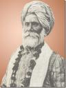

कुछ दिनों पहले वन्दे मातरम पर एक महान भारतीय वैज्ञानिक आचार्य प्रफ़ुल्ल चन्द्र राय पर एक लेख पढ़ा, ऐसे ही एक और विद्वान के बारे में आपको बताने जा रहा हुँ, जिन्होने वनस्पति शास्त्र जैसे कठिन विषय को गुजरात की जनता के लिये समझना आसान कर दिया।

गाँधीजी की जन्मभूमि पोरबन्दर में सन १८४९ जन्में इन महान विद्वान का नाम था जयकृष्ण इन्द्रजी ठाकर। (જયકૃષ્ણ ઇન્દ્રજી ઠાકર) स्कूल की आठ आने की फ़ीस ना भर पाने की वजह से अंग्रेजी माध्यम से कक्षा तीन तक ही पढ़ पाये, क्यों कि कक्षा ४ की फ़ीस १ रुपया महीना थी जो कि इन्द्रजी के लिये भर पानी मुश्किल थी।
मात्र कक्षा तीन तक पढ़ पने वाले इन्द्र जी को डॉ भगवान लाल इन्द्रजी का सानिध्य मिलते ही उन्होने इन्द्रजी के अन्दर छुपे विद्वान को पहचान लिया और उन्हीं की मदद से इन्द्र जी वनस्पती शास्त्र के महापंडित बने।
वनस्पति शास्त्र पर इन्द्रजी ने सबसे पहले १९१० में एक गुजराती पुस्तक लिखी जिसका नाम था ” वनस्पति शास्त्र“। इस पुस्तक को देख कर उस समय के अंग्रेज विद्वान चौंक गए और उन्होने इन्द्रजी से इस पुस्तक को अंग्रेजी में लिखने का आग्रह किया तब उनका उत्तर था:
” आप अंग्रेज भारत के किसी भी प्रांत में पैदा होने वालि वनस्पति को पहचान सकते हो, हिन्द की वन्स्पति पर पुस्तक भी लिखते हो परन्तु हम हमारे यहाँ पैदा होने वाली वनस्पति को नहीं पहचान पाते हैं; आप जिस पद्दति से दुनियाँ भर की वनस्पति को पहचान लेते हो उसी पद्दति को में अपने देश वासियों को बताना चाहता हुँ अत: मैंने इस पुस्तक को गुजराती में ही लिखने का निश्चय किया है।
७५५ पृष्ठ की और १०रुपये मूल्य की इस पुस्तक में इन्द्र जी ने लगभग ६११ वनस्पतियों का वर्णन, वनस्पति को पहचानने के तरीके साथ ही गुजराती श्लोक और दोहे कविताओं के माध्यम से वनस्पति के उपयोग का विस्तृत वर्णन किया था। इसी पुस्तक को पढ़ कर गांधीजी ने अपने अफ़्रीका वास के दौरान नीम को दवाई के रूप में उपयोग में लिया था। पर अफ़सोस कि अपनी पत्नी के गहने गिरवी रख कर यह पुस्तक प्रकाशित करवाने के बाद भी यह पुस्तक इतनी नहीं बिक पाई। यानि पुस्तक की पहली आवृति बिकने में लगभग १७ वर्ष बीत गये पर इन्द्रजी निराश नहीं हुए और कच्छ के महाराजा के अनुरोध और सहयोग से उन्होने दूसरी पुस्तक लिखी जिसका नाम था “कच्छ नी जड़ी बूट्टियों“। इस पुस्तक में इन्द्रजी ने लगभग १०० जड़ी बूटीयों का सचित्र परिचय दिया था। उस जमाने में वनस्पति शास्त्र की पुस्तकों को साहित्य की श्रेणी में नहीं रखा जाता था ( अब भी नहीं रखा जाता है) इस वजह से यह पुस्तक भी इतनी प्रसिद्ध नहीं हो पाई, परन्तु बनारस हिन्दू विश्व विध्यालय के पं मदन मोहन मालवीय ने इन्द्र जी को निमंत्रण दिया कि वे काशी आवें और वनस्पति शास्त्र में सहाय़ता करें।
” मैं बड़ा अहसान मानूंगा यदि आप कृपाकर यहाँ आवें और विद्वानों की मंडली में काशी वास का सुख अनुभव करें और आयुर्वेद के उद्धार और उन्नति में सहायता पहुँचाने के लिये वनस्पति वनBotenical Garden बनाने में संमति और सहायता दें।
परन्तु वृद्धावस्था की वजह से इन्द्रजी, पं मदन मोहन मालवीय का पस्ताव स्वीकार नहीं सके और उन्होने लिखा:
“अब यह शरीर ७६ वर्ष का जीर्ण हुआ है, कर्ण बधिर हुआ है, मुंह में एक दाँत शेष रहा है। बरसों तक जंगल में भटकने से अब कमर भी अकड़ रही है…. दीपोत्सव के बाद स्वास्थय होगा तो एक समय बनारस विश्वविध्यालय के आयुर्वेदिक विभाग में वनस्पति वन के दर्शन कर कृतार्थ होउंगा।
(उस जमाने में पत्राचार की भाषा कितनी सुन्दर हुआ करती थी।)
परन्तु जयकृष्ण इन्द्रजी काशी नहीं जा पाये और सन १९२९ में लगभग ८० वर्ष की उम्र में वनस्पति शास्त्र के एसे प्रकांड विद्वान जयकृष्ण इन्दजी का निधन हो गया।
गुजरात समाचार (दिनांक28.10.2004) से साभार